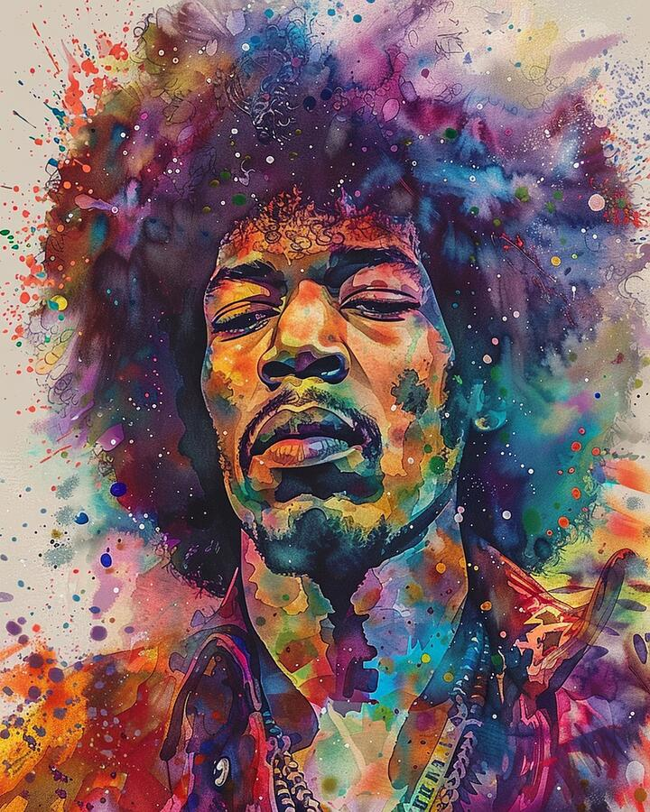
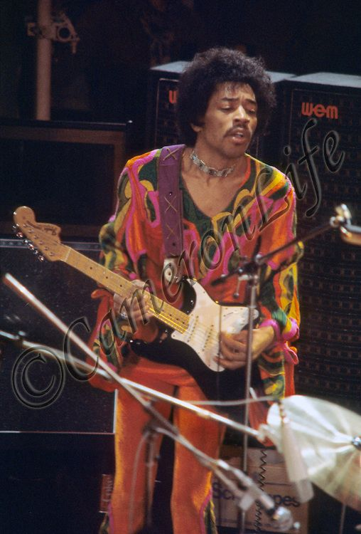

Jimi Hendrix was born in Seattle, Washington in 1942 and began playing guitar at age 15. Soon after being discharged from the military in 1962, he moved to Clarksville, then Nashville, and later on to England in the late 1960s. Shortly after, he formed the Jimi Hendrix Experience and quickly rose to fame with his innovative guitar playing and electrifying performances, such as his performance at the Monterey Pop Festival in 1967, which skyrocketed his fame in the US. He was inducted into the Rock and Roll Hall of Fame in 1992.
Hendrix was inspired by American rock and roll and electric blues. He favored overdriven amplifiers with high volume and gain, and was instrumental in popularizing the previously undesirable sounds caused by guitar amplifier feedback. He was also one of the first guitarists to make extensive use of tone-altering effects units in mainstream rock, such as fuzz distortion, Octavia, wah-wah, and Uni-Vibe. He was the first musician to use stereophonic phasing effects in recordings. Holly George-Warren of Rolling Stone commented: "Hendrix pioneered the use of the instrument as an electronic sound source. Players before him had experimented with feedback and distortion, but Hendrix turned those effects and others into a controlled, fluid vocabulary every bit as personal as the blues with which he began."
Jimi Hendrix revolutionized what guitaristry can be within the rock genre, pushing the boundaries of sound and performance. His innovative techniques and expressive playing style have left a lasting impact on musicians, the industry, and fans alike. While it may be tempting to focus solely on his technical prowess, Hendrix's true genius lay in his ability to convey deep emotion through his music, making each performance a unique and unforgettable experience. As controversial as it may be, Jimi Hendrix is the true King of Rock'n'Roll.
